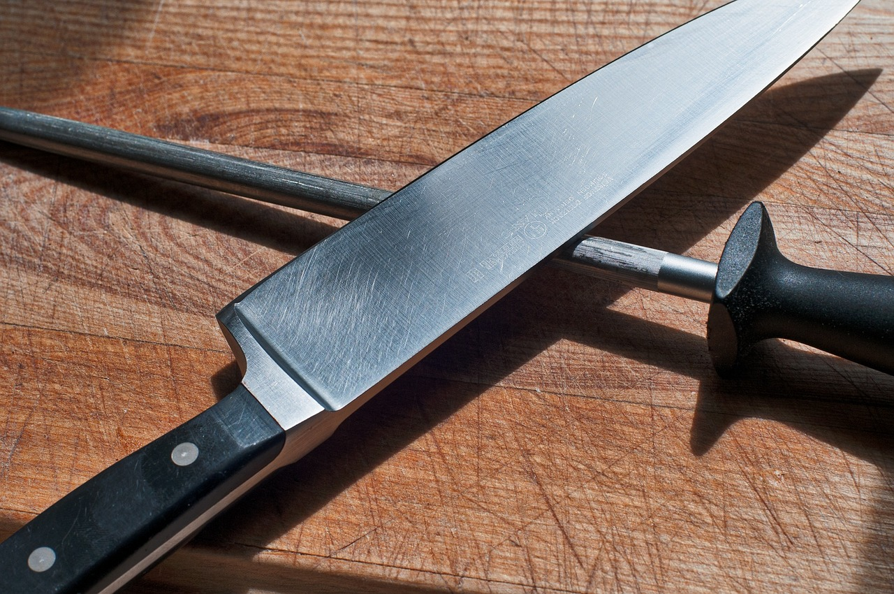

A beginner chef can get by with one or two all purpose knives. As you get more experienced in the kitchen you can expend your knife collection.
If you can only afford to have one knife, get a good Chef’s knife. This is pretty much the all-purpose knife. It is usually 6-10 inches long, with a broad blade that tapers upwards to a point. It allows you to rock the knife back and forth for easy mincing.
This thin stretched out version of a chefs knife has a sharp edge to allow for thin even slices of meat. Sizes range from 8 to 15 inches.
This large, rectangular, heavy bladed knife narrows towards the edge. The purpose is removing meat from the bone. A narrower version of the cleaver is made for chopping heavy vegetables like squash.
A multi-functional knife with a drop point tip. The ultra sharp edge cuts smoothly while the tip give the knife additional precision. Good for meats and vegetables.
A bread knife has a long serrated blade that allows you to cleanly slice through bread without it crushing it.
A serrated utility knife is usually ranges from 4-7 inches long. Used for cutting delicate fruits and vegetables. Referred to as a ‘sandwich’ or ‘tomato’ knife
A paring knife is used to peel fruits and vegetables. Sizes range from 2 ¼ to 4 inches long. It is smaller than other knives and ideal for detail work like creating garnishes.
A thin flexible curved blade ranging from 5-7 inches long. Designed to fit in smaller spaces to remove meat from bone.
A peeler is a curved bladed knife used to peel fruits and vegetables. The curve allows the blade to reach more surface on curved items such as cucumbers, squash, and also potatoes.
Choose the knife size needed by the purpose of use.
| Knife | Size | Purpose |
|---|---|---|
| Chef | 9 ¼, 7 ⅝ | Slice, Dice, Chop |
| Carving | 9, 8, 6 ¾ | Smooth, Thin Even Slices |
| Utility | 4 ⅞ 6 ¼ | Slicing, Coring, Trimming |
| Santoku | 7,5 | Slice, Dice, Chop |
| Paring | 2 ¾, 3, 4 | Cutting small fruits and vegetables |
| Peeler | 2 ¾ | Curved blade for peeling |
The image below shows the sharpening steel
Knife Definitions: Find out what knives are suited to your task.
If there’s one knife you can’t live without, it’s a chef’s knife. It’s an all-purpose knife with an 8 inch blade that works for a variety of cutting tasks. Chopping, dicing and slicing small to medium sized fruits and vegetables. It works well for slicing meats.
You can also use it to cut fresh herbs and slices. Notice the rocking motion when cutting. You want to grab the handle like this. The wider blade on a chef’s knife keeps your knuckles off the cutting board. Plus, it allows you to easily transfer your cut food to a pan or mixing bowl.